Disciplinas
GESTÃO DE INOVAÇÃO E DESENVOLVIMENTO DE PRODUTOS Concluído
Materiais
Vídeo 1 - Projeto e Desenvolvimento do Produto - Aula 12 - Prototipagem (UNIVESP) sendProfessor responsável pela disciplina: Antonio Carlos Dantas Cabral (UNIVESP)
Prototipagem
- Versão inicial poderá vir a ser o produto final
- Desenvolver protótipo é buscar atender, de maneira primária, aos requisitos do consumidor
- O protótipo permite melhores interações entre fabricante 🡸🡺 usuário;
Projeto e Desenvolvimento do Produto
Premissa básicaEconomia baseada no conhecimento
Vantagem competitiva 🡺 O conhecimento é vantagem competitiva
🡹
Inovação contínua
🡹
Criação do conhecimento
A empresa criadora de conhecimento gerencia sistematicamente esse processo de criação
Prototipagem- Baixa fidelidade
- Alta fidelidade
- Throw away
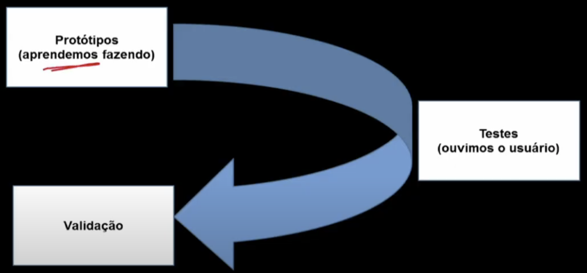
🡻
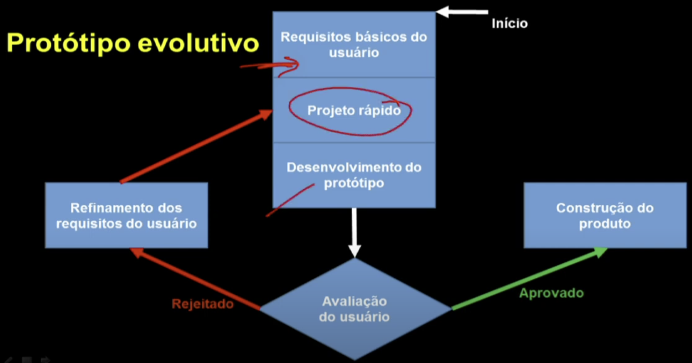
🡻
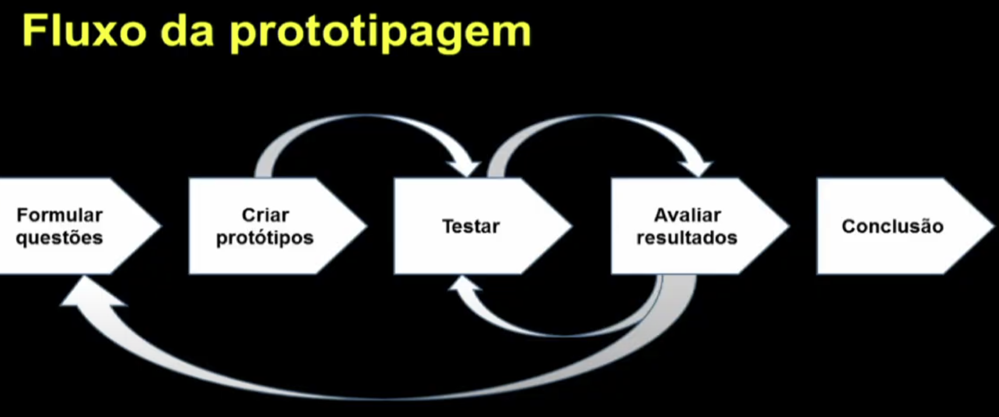
Design thinking: prototipação
Protótipos:- Papel
- Modelo de volume (volumétrico)
- Serviços
- Storyboard
- Valida ideias
- Pode ocorrer ao longo de todo o processo "design thinking"
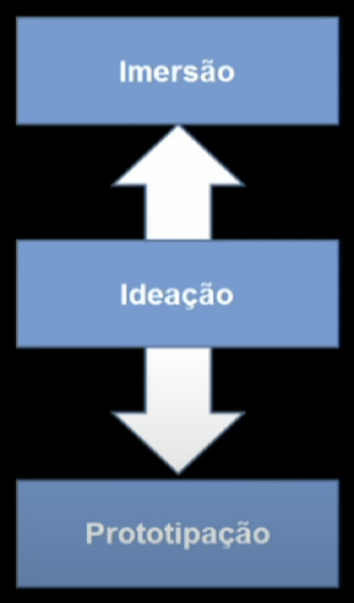
🡻
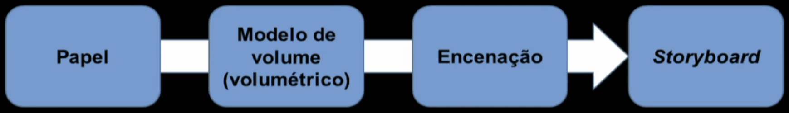
- O que é:
- Representação gráfica simplificada
- Ganha complexidade com interações dos integrantes do time
- Quando usar:
- Explorar possibilidades de comunicação do produto
- Tangibilizar a apresentação de uma ideia
- Em ambientes controlados e/ou com potenciais consumidores
- Como aplicar:
- Executado à mão / rascunho
- Com auxílio de computador
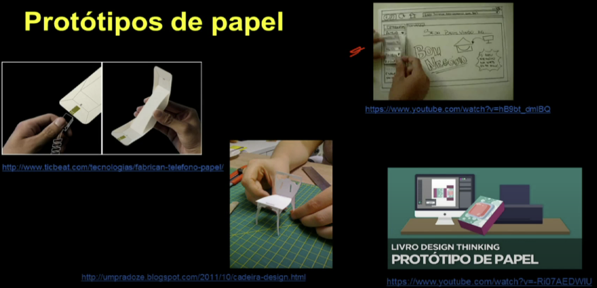
- O que é:
- Representação de um produto com poucos detalhes ou até com aparência final
- Ainda não é funcional
- Quando usar:
- Tangibilizar uma ideia ou tirá-la do âmbito conceitual
- Para visualizar o conceito e estimular análise crítica
- Como aplicar:
- Construído com materiais simples
- Pode ser mais elaborado (pintado ou com acabamento semelhante ao final)
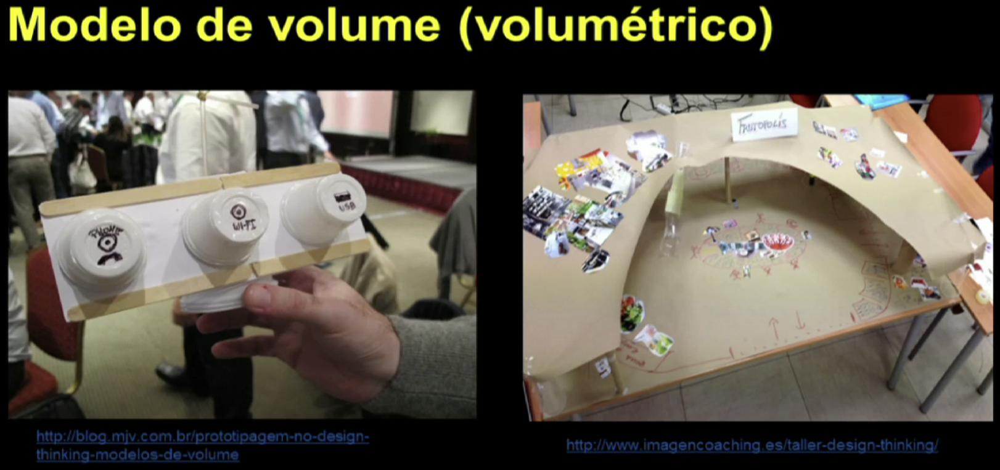
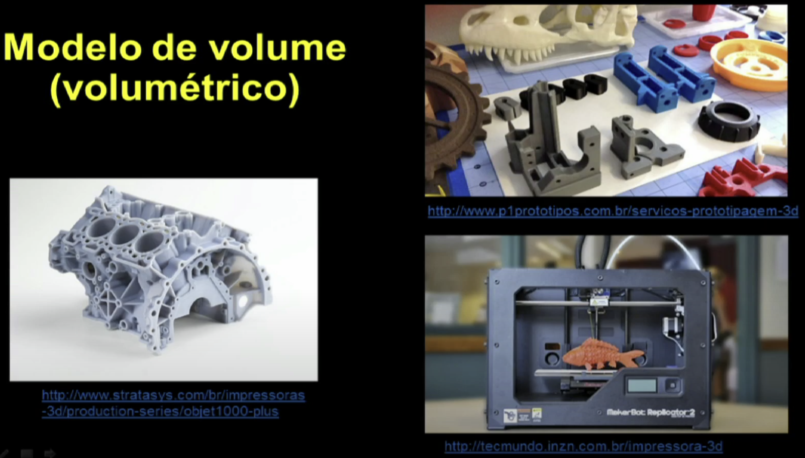
- O que é:
- Simulação improvisada de uma situação sobre aspectos do uso de um produto ou de um serviço
- Quando usar:
- Para testar uma experiência
- Para detalhar etapas do uso/aplicação
- Como aplicar:
- Selecionar pessoas para a encenação com diálogo entre elas
- Cada "ator" tem um papel no uso do produto ou serviço
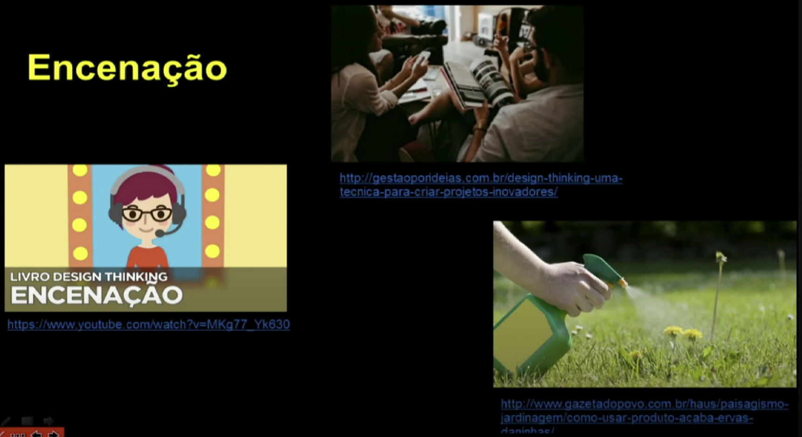
- O que é:
- Representação visual de uma história em quadros estáticos, compostos por desenhos, colagens, fotografias etc.
- Quando usar:
- Para comunicar uma ideia a usuários
- Visualizar encadeamento de uma solução
- Refinar em serviço final
- Como aplicar:
- Ter exata ideia do que se quer comunicar
- Ter um consistente roteiro escrito
- Representar visualmente o que se deseja comunicar
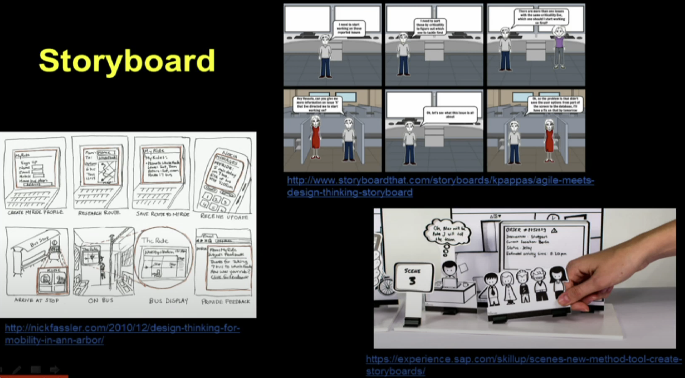
- O que é:
- Simulação de artefatos materiais, ambientes ou relações interpessoais que representam os diversos aspectos de um serviço
- Quando usar:
- Para simular aspectos abstratos dos serviços
- Quando se deseja encontrar uma solução excepcional para o usuário
- Para projetar cada elemento do serviço
- Como aplicar:
- Criar ambiente que estimule a interação entre o prestador e o usuário do serviço
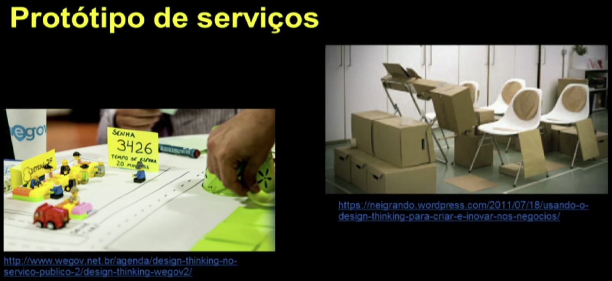